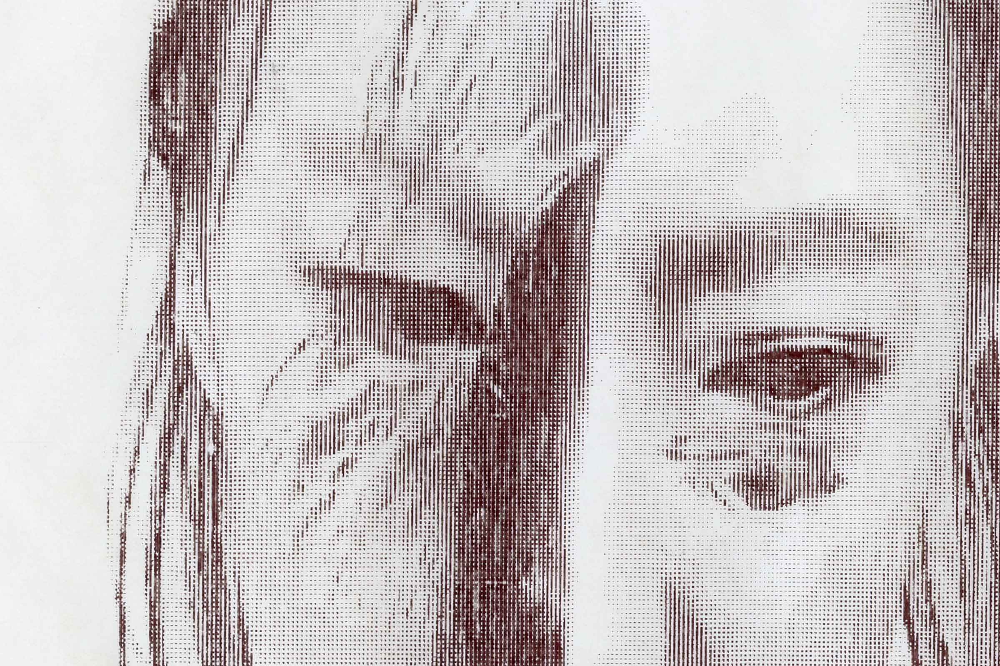
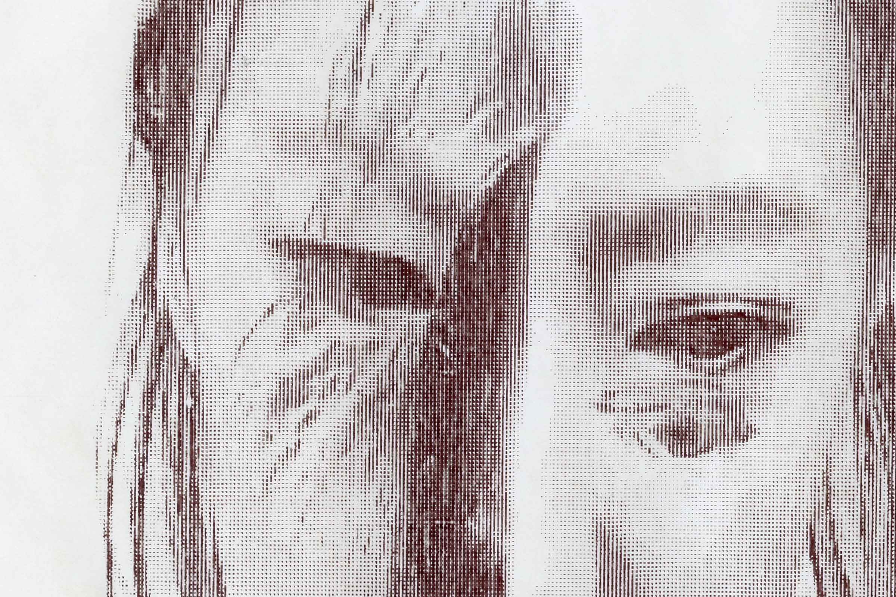

Traces souvenirs
These souvenirs (memento mori) are printed on oversized receipt paper at the end of each interactive photo booth session shown in Traces.
Each souvenir captures the final frame of the photo session: your portrait overlaid with previous users.
Created in collaboration with human-computer interaction designer Rachel Ng.
My role: Concept, hardware and software development, physical construction
The grainy, low fidelity print on fragile receipt paper evokes the throwaway, impermanent feeling of a social media feed.
The souvenir provides an uncanny physical record of an ephemeral experience, while underscoring the ambiguity of the exchange: are we connected to these ghostly others, or are they subsuming us?